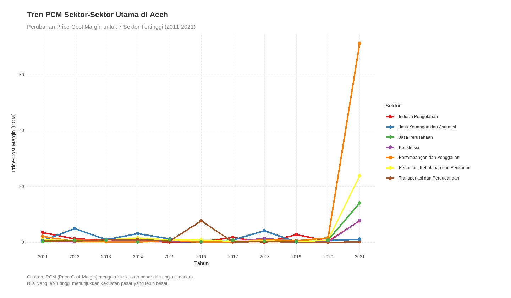

library(readxl)
data <- read_excel("pdrbaceh2010-2021.xlsx")
# Kolom 2-14 PDRB Berlaku
data_b <- data[, 2:14]
data_k <- data[, 15:27]
# Rename kolom
namakolom <- c("Sektor", "2010", "2011", "2012", "2013", "2014",
"2015", "2016", "2017", "2018", "2019", "2020", "2021")
colnames(data_b) <- namakolom
colnames(data_k) <- namakolom
# Merge data into one data frame with style long data
library(tidyverse)
library(dplyr)
data_b <- pivot_longer(data_b, cols = -Sektor, names_to = "Tahun", values_to = "PDRB_Berlaku")
data_k <- pivot_longer(data_k, cols = -Sektor, names_to = "Tahun", values_to = "PDRB_Konstan")
data_b <- data_b %>% mutate(Tahun = as.integer(Tahun))
data_k <- data_k %>% mutate(Tahun = as.integer(Tahun))
data_b <- data_b %>% arrange(Tahun)
data_k <- data_k %>% arrange(Tahun)
# Merge into one data frame
data <- merge(data_b, data_k, by = c("Sektor", "Tahun"), all = TRUE)
# Urutkan sektor seprti pada data_b (baris data awal)
# Arrange based on the original sector order from the Excel file
original_data <- read_excel("pdrbaceh2010-2021.xlsx")
sector_order <- original_data[[2]] # First column with sector names
data <- data %>%
arrange(match(Sektor, sector_order), Tahun)Apa itu Price–Cost Margin (PCM)?
Price–Cost Margin (PCM), atau yang juga dikenal sebagai Lerner Index, merupakan salah satu indikator utama untuk mengukur kekuatan pasar dan tingkat markup suatu perusahaan (Besanko et al., 2013; Elzinga & Mills, 2011; Feinberg, 1980; Spierdijk & Zaouras, 2017; Zhang et al., 2020). Secara teoretis, PCM didefinisikan sebagai:
\[ \mathrm{PCM} \;=\;\frac{P - MC}{P}, \]
di mana
- \(P\) adalah harga pasar,
- \(MC\) adalah biaya marjinal.
Turunan rumus PCM dari kondisi optimasi produsen (profit maksimum) diperoleh sebagai berikut:
Kondisi Marginal Revenue = Marginal Cost
\[ MR = MC \quad\Longrightarrow\quad P + Q\,\frac{dP}{dQ} = MC \;\;\Longrightarrow\;\; P - MC = -\,Q\,\frac{dP}{dQ}. \]
Definisi PCM Membagi kedua sisi persamaan di atas dengan \(P\):
\[ \frac{P - MC}{P} = -\,\frac{Q}{P}\,\frac{dP}{dQ}. \]
Hubungan dengan Elastisitas Permintaan (\(\varepsilon_d\)) Elastisitas permintaan tersirat didefinisikan sebagai
\[ \varepsilon_d = \frac{dQ}{dP}\,\frac{P}{Q} \quad\Longrightarrow\quad \frac{dP}{dQ}\,\frac{Q}{P} = \frac{1}{\varepsilon_d}. \]
Sehingga diperoleh rumus akhir:
\[ \boxed{ \mathrm{PCM} = -\,\frac{Q}{P}\,\frac{dP}{dQ} = -\,\frac{1}{\varepsilon_d} } \tag{1} \]
Persamaan (1) menunjukkan bahwa PCM adalah invers negatif dari elastisitas permintaan — semakin inelastis permintaan (\(|\varepsilon_d|\) kecil), semakin besar markup (PCM mendekati 1), dan sebaliknya.
Metode Perhitungan (Proxy) Price–Cost Margin (PCM)
Berikut empat pendekatan proxy untuk mengukur PCM, lengkap dengan langkah perhitungan serta kelebihan dan kekurangannya.
1. Proksi dari PDRB ADHB & ADHK
Langkah:
Tentukan kuantitas riil:
\[ Q_t = \mathrm{ADHK}_t. \]
Hitung harga implisit (deflator PDRB):
\[ P_t = \frac{\mathrm{ADHB}_t}{\mathrm{ADHK}_t}. \]
Estimasi elastisitas permintaan:
\[ \varepsilon_d \approx \frac{\Delta Q_t/Q_t}{\Delta P_t/P_t} = \frac{\Delta \mathrm{ADHK}_t/\mathrm{ADHK}_t}{\Delta (\mathrm{ADHB}_t/\mathrm{ADHK}_t)/(\mathrm{ADHB}_t/\mathrm{ADHK}_t)}. \]
\[ \varepsilon_d = \frac{Pertumbuhan ekonomi}{Inflasi dengan Pendekatan PDRB Deflator} \tag{2} \]
Hitung PCM:
\[ \mathrm{PCM} = -\,\frac{1}{\varepsilon_d}. \]
Kelebihan:
- Data ADHB & ADHK tersedia di BPS.
- Mudah dipahami dan cepat dihitung.
Kekurangan:
- Tanpa kontrol variabel lain (income, teknologi, dsb.).
- Sensitif terhadap outlier tahun tertentu.
- Tidak menyediakan ukuran ketidakpastian statistik.
2. Proksi via Regresi Log–Log / Panel
Langkah:
Siapkan panel data sektor–tahun \((i,t)\): \(\ln Q_{i,t} = \ln(\mathrm{ADHK}_{i,t})\) dan \(\ln P_{i,t} = \ln(\mathrm{ADHB}_{i,t}/\mathrm{ADHK}_{i,t})\).
Jalankan regresi:
\[ \ln Q_{i,t} = \alpha_i + \beta\,\ln P_{i,t} + \gamma X_{i,t} + u_{i,t}. \]
Ambil \(\hat\beta\) sebagai elastisitas \(\varepsilon_d\), lalu \(\mathrm{PCM} = -\,1/\hat\beta\).
Kelebihan:
- Memungkinkan kontrol variabel (pendapatan, biaya input, tren).
- Memberikan standar error dan uji signifikansi.
- Lebih robust terhadap fluktuasi ekstrem jika diuji asumsi.
Kekurangan:
- Memerlukan software statistik dan pemahaman regresi panel.
- Perlu menangani potensi endogenitas harga (instrumen).
- Membutuhkan banyak observasi per sektor/tahun.
3. Proksi PCM di Level Perusahaan
Langkah:
Seperti didefinisikan oleh Schmalensee (1989), PCM merupakan perbedaan antara penjualan dan biaya variabel dibagi penjualan, dengan biaya variabel berupa pengeluaran untuk tenaga kerja dan material:
\[ \mathrm{PCM} = \frac{\mathrm{Sales} - \mathrm{Labour} - \mathrm{Material}}{\mathrm{Sales}} \;=\;\frac{\text{Gross margin}}{\text{Sales}}. \] Kelebihan:
- Memberikan ukuran PCM yang lebih langsung dan akurat pada level mikro.
- Memungkinkan analisis heterogenitas PCM antar perusahaan dalam sektor yang sama.
Kekurangan:
- Data tidak tersedia di BPS dan membutuhkan survei khusus tingkat perusahaan.
- Akses ke laporan keuangan perusahaan sering terbatas dan tidak komprehensif.
- Pengumpulan data memerlukan biaya dan waktu yang signifikan.
Perhitungan Empiris PCM dengan Pendekatan PDRB
Cleaning Data
Contoh data ACEH 2010-2021
head(data)
tail(data)| Sektor | Tahun | PDRB_Berlaku | PDRB_Konstan | |
|---|---|---|---|---|
| <chr> | <int> | <dbl> | <dbl> | |
| 1 | Pertanian, Kehutanan dan Perikanan | 2010 | 25579575 | 25579575 |
| 2 | Pertanian, Kehutanan dan Perikanan | 2011 | 27553523 | 26515484 |
| 3 | Pertanian, Kehutanan dan Perikanan | 2012 | 29643043 | 27685114 |
| 4 | Pertanian, Kehutanan dan Perikanan | 2013 | 32254068 | 28980433 |
| 5 | Pertanian, Kehutanan dan Perikanan | 2014 | 34376594 | 29690562 |
| 6 | Pertanian, Kehutanan dan Perikanan | 2015 | 37598849 | 31186379 |
| Sektor | Tahun | PDRB_Berlaku | PDRB_Konstan | |
|---|---|---|---|---|
| <chr> | <int> | <dbl> | <dbl> | |
| 211 | PDRB TOTAL (BPS) | 2016 | 136843818 | 116374300 |
| 212 | PDRB TOTAL (BPS) | 2017 | 145806923 | 121240979 |
| 213 | PDRB TOTAL (BPS) | 2018 | 155911115 | 126824491 |
| 214 | PDRB TOTAL (BPS) | 2019 | 164162928 | 132069571 |
| 215 | PDRB TOTAL (BPS) | 2020 | 166372321 | 131580967 |
| 216 | PDRB TOTAL (BPS) | 2021 | 184976302 | 135249594 |
Hitung harga deflator PDRB
### Hitung harga deflator PDRB
# Calculate price deflator
data <- data %>%
mutate(Deflator = PDRB_Berlaku / PDRB_Konstan)
# Display sample results
head(data)| Sektor | Tahun | PDRB_Berlaku | PDRB_Konstan | Deflator | |
|---|---|---|---|---|---|
| <chr> | <int> | <dbl> | <dbl> | <dbl> | |
| 1 | Pertanian, Kehutanan dan Perikanan | 2010 | 25579575 | 25579575 | 1.000000 |
| 2 | Pertanian, Kehutanan dan Perikanan | 2011 | 27553523 | 26515484 | 1.039148 |
| 3 | Pertanian, Kehutanan dan Perikanan | 2012 | 29643043 | 27685114 | 1.070721 |
| 4 | Pertanian, Kehutanan dan Perikanan | 2013 | 32254068 | 28980433 | 1.112960 |
| 5 | Pertanian, Kehutanan dan Perikanan | 2014 | 34376594 | 29690562 | 1.157829 |
| 6 | Pertanian, Kehutanan dan Perikanan | 2015 | 37598849 | 31186379 | 1.205618 |
Hitung pertumbuhan ekonomi dan inflasi
### Hitung pertumbuhan ekonomi dan inflasi
data <- data %>%
group_by(Sektor) %>%
arrange(Tahun) %>%
mutate(Pertumbuhan = (PDRB_Konstan / lag(PDRB_Konstan) - 1),
Inflasi = (Deflator / lag(Deflator) - 1))
data1 <- na.omit(data)
head(data1)| Sektor | Tahun | PDRB_Berlaku | PDRB_Konstan | Deflator | Pertumbuhan | Inflasi |
|---|---|---|---|---|---|---|
| <chr> | <int> | <dbl> | <dbl> | <dbl> | <dbl> | <dbl> |
| Pertanian, Kehutanan dan Perikanan | 2011 | 27553522.62 | 26515484.42 | 1.0391484 | 0.036588172 | 0.03914838 |
| Pertambangan dan Penggalian | 2011 | 15912460.98 | 15267408.71 | 1.0422503 | -0.020191450 | 0.04225028 |
| Industri Pengolahan | 2011 | 9359997.67 | 9065292.81 | 1.0325091 | 0.009166803 | 0.03250914 |
| Pengadaan Listrik dan Gas | 2011 | 116661.62 | 119920.76 | 0.9728226 | 0.070462307 | -0.02717743 |
| Pengadaan Air, Pengelolaan Sampah, Limbah dan Daur Ulang | 2011 | 28545.85 | 26754.04 | 1.0669735 | 0.060007559 | 0.06697352 |
| Konstruksi | 2011 | 8916639.19 | 8690837.23 | 1.0259816 | 0.059081871 | 0.02598161 |
Hitung PCM
data1 <- data1 %>%
mutate(pcm = abs(1/(Pertumbuhan/Inflasi)))
head(data1,18)| Sektor | Tahun | PDRB_Berlaku | PDRB_Konstan | Deflator | Pertumbuhan | Inflasi | pcm |
|---|---|---|---|---|---|---|---|
| <chr> | <int> | <dbl> | <dbl> | <dbl> | <dbl> | <dbl> | <dbl> |
| Pertanian, Kehutanan dan Perikanan | 2011 | 27553522.62 | 26515484.42 | 1.0391484 | 0.036588172 | 0.0391483777 | 1.06997358 |
| Pertambangan dan Penggalian | 2011 | 15912460.98 | 15267408.71 | 1.0422503 | -0.020191450 | 0.0422502782 | 2.09248363 |
| Industri Pengolahan | 2011 | 9359997.67 | 9065292.81 | 1.0325091 | 0.009166803 | 0.0325091386 | 3.54639876 |
| Pengadaan Listrik dan Gas | 2011 | 116661.62 | 119920.76 | 0.9728226 | 0.070462307 | -0.0271774305 | 0.38570169 |
| Pengadaan Air, Pengelolaan Sampah, Limbah dan Daur Ulang | 2011 | 28545.85 | 26754.04 | 1.0669735 | 0.060007559 | 0.0669735229 | 1.11608477 |
| Konstruksi | 2011 | 8916639.19 | 8690837.23 | 1.0259816 | 0.059081871 | 0.0259816122 | 0.43975608 |
| Perdagangan Besar dan Eceran; Reparasi Mobil dan Sepeda Motor | 2011 | 15214782.16 | 14616419.02 | 1.0409377 | 0.054460281 | 0.0409377380 | 0.75169899 |
| Transportasi dan Pergudangan | 2011 | 7971070.55 | 7754144.53 | 1.0279755 | 0.049585489 | 0.0279754931 | 0.56418710 |
| Penyediaan Akomodasi dan Makan Minum | 2011 | 1020825.32 | 981591.00 | 1.0399701 | 0.077851845 | 0.0399701320 | 0.51341278 |
| Informasi dan Komunikasi | 2011 | 3447661.14 | 3413043.86 | 1.0101426 | 0.041118946 | 0.0101426410 | 0.24666588 |
| Jasa Keuangan dan Asuransi | 2011 | 1675563.75 | 1589510.30 | 1.0541383 | 0.084106832 | 0.0541383406 | 0.64368541 |
| Real Estat | 2011 | 3371699.77 | 3282570.47 | 1.0271523 | 0.042417506 | 0.0271522891 | 0.64011989 |
| Jasa Perusahaan | 2011 | 571243.34 | 564718.86 | 1.0115535 | 0.047003461 | 0.0115534852 | 0.24580073 |
| Administrasi Pemerintahan, Pertahanan dan Jaminan Sosial Wajib | 2011 | 7526186.50 | 7519516.00 | 1.0008871 | 0.046337566 | 0.0008870918 | 0.01914412 |
| Jasa Pendidikan | 2011 | 2028984.26 | 2036180.90 | 0.9964656 | 0.022633330 | -0.0035343833 | 0.15615834 |
| Jasa Kesehatan dan Kegiatan Sosial | 2011 | 2289291.84 | 2256744.02 | 1.0144225 | 0.044584363 | 0.0144224688 | 0.32348715 |
| Jasa lainnya | 2011 | 1212488.69 | 1174074.22 | 1.0327190 | 0.042207014 | 0.0327189505 | 0.77520173 |
| PDRB TOTAL (BPS) | 2011 | 108217625.25 | 104874211.16 | 1.0318802 | 0.032783166 | 0.0318802311 | 0.97245737 |
Hitung WEIGHTED PCM
WEIGHTED PCM adalah perhitungan PCM yang mempertimbangkan kontribusi sektor terhadap total PDRB.
# Calculate the contribution of each sector to total GDP for each year
data_weighted <- data1 %>%
group_by(Tahun) %>%
mutate( Weight = PDRB_Berlaku / PDRB_Berlaku[18],
Weighted_PCM = pcm * Weight)
# Display the results
head(data_weighted,18)
tail(data_weighted,18)| Sektor | Tahun | PDRB_Berlaku | PDRB_Konstan | Deflator | Pertumbuhan | Inflasi | pcm | Weight | Weighted_PCM |
|---|---|---|---|---|---|---|---|---|---|
| <chr> | <int> | <dbl> | <dbl> | <dbl> | <dbl> | <dbl> | <dbl> | <dbl> | <dbl> |
| Pertanian, Kehutanan dan Perikanan | 2011 | 27553522.62 | 26515484.42 | 1.0391484 | 0.036588172 | 0.0391483777 | 1.06997358 | 0.2546121536 | 0.2724282786 |
| Pertambangan dan Penggalian | 2011 | 15912460.98 | 15267408.71 | 1.0422503 | -0.020191450 | 0.0422502782 | 2.09248363 | 0.1470413063 | 0.3076815260 |
| Industri Pengolahan | 2011 | 9359997.67 | 9065292.81 | 1.0325091 | 0.009166803 | 0.0325091386 | 3.54639876 | 0.0864923588 | 0.3067363935 |
| Pengadaan Listrik dan Gas | 2011 | 116661.62 | 119920.76 | 0.9728226 | 0.070462307 | -0.0271774305 | 0.38570169 | 0.0010780279 | 0.0004157972 |
| Pengadaan Air, Pengelolaan Sampah, Limbah dan Daur Ulang | 2011 | 28545.85 | 26754.04 | 1.0669735 | 0.060007559 | 0.0669735229 | 1.11608477 | 0.0002637819 | 0.0002944029 |
| Konstruksi | 2011 | 8916639.19 | 8690837.23 | 1.0259816 | 0.059081871 | 0.0259816122 | 0.43975608 | 0.0823954432 | 0.0362338975 |
| Perdagangan Besar dan Eceran; Reparasi Mobil dan Sepeda Motor | 2011 | 15214782.16 | 14616419.02 | 1.0409377 | 0.054460281 | 0.0409377380 | 0.75169899 | 0.1405943082 | 0.1056845993 |
| Transportasi dan Pergudangan | 2011 | 7971070.55 | 7754144.53 | 1.0279755 | 0.049585489 | 0.0279754931 | 0.56418710 | 0.0736577848 | 0.0415567722 |
| Penyediaan Akomodasi dan Makan Minum | 2011 | 1020825.32 | 981591.00 | 1.0399701 | 0.077851845 | 0.0399701320 | 0.51341278 | 0.0094330782 | 0.0048430629 |
| Informasi dan Komunikasi | 2011 | 3447661.14 | 3413043.86 | 1.0101426 | 0.041118946 | 0.0101426410 | 0.24666588 | 0.0318585917 | 0.0078584275 |
| Jasa Keuangan dan Asuransi | 2011 | 1675563.75 | 1589510.30 | 1.0541383 | 0.084106832 | 0.0541383406 | 0.64368541 | 0.0154832796 | 0.0099663611 |
| Real Estat | 2011 | 3371699.77 | 3282570.47 | 1.0271523 | 0.042417506 | 0.0271522891 | 0.64011989 | 0.0311566602 | 0.0199439979 |
| Jasa Perusahaan | 2011 | 571243.34 | 564718.86 | 1.0115535 | 0.047003461 | 0.0115534852 | 0.24580073 | 0.0052786534 | 0.0012974969 |
| Administrasi Pemerintahan, Pertahanan dan Jaminan Sosial Wajib | 2011 | 7526186.50 | 7519516.00 | 1.0008871 | 0.046337566 | 0.0008870918 | 0.01914412 | 0.0695467719 | 0.0013314116 |
| Jasa Pendidikan | 2011 | 2028984.26 | 2036180.90 | 0.9964656 | 0.022633330 | -0.0035343833 | 0.15615834 | 0.0187491109 | 0.0029278300 |
| Jasa Kesehatan dan Kegiatan Sosial | 2011 | 2289291.84 | 2256744.02 | 1.0144225 | 0.044584363 | 0.0144224688 | 0.32348715 | 0.0211545193 | 0.0068432152 |
| Jasa lainnya | 2011 | 1212488.69 | 1174074.22 | 1.0327190 | 0.042207014 | 0.0327189505 | 0.77520173 | 0.0112041702 | 0.0086854921 |
| PDRB TOTAL (BPS) | 2011 | 108217625.25 | 104874211.16 | 1.0318802 | 0.032783166 | 0.0318802311 | 0.97245737 | 1.0000000000 | 0.9724573686 |
| Sektor | Tahun | PDRB_Berlaku | PDRB_Konstan | Deflator | Pertumbuhan | Inflasi | pcm | Weight | Weighted_PCM |
|---|---|---|---|---|---|---|---|---|---|
| <chr> | <int> | <dbl> | <dbl> | <dbl> | <dbl> | <dbl> | <dbl> | <dbl> | <dbl> |
| Pertanian, Kehutanan dan Perikanan | 2021 | 55611319.19 | 37768075.79 | 1.472442 | -0.003468143 | 0.082583090 | 23.81190338 | 0.3006402373 | 7.1588162825 |
| Pertambangan dan Penggalian | 2021 | 12305335.02 | 10385698.66 | 1.184835 | -0.009502109 | 0.676527939 | 71.19766287 | 0.0665238461 | 4.7363423681 |
| Industri Pengolahan | 2021 | 9314184.19 | 6212088.19 | 1.499364 | 0.025325167 | 0.196384915 | 7.75453579 | 0.0503533918 | 0.3904671793 |
| Pengadaan Listrik dan Gas | 2021 | 227791.88 | 216905.40 | 1.050190 | -0.002141639 | 0.003591626 | 1.67704572 | 0.0012314652 | 0.0020652235 |
| Pengadaan Air, Pengelolaan Sampah, Limbah dan Daur Ulang | 2021 | 85394.92 | 51384.98 | 1.661865 | 0.025351545 | 0.012611057 | 0.49744726 | 0.0004616533 | 0.0002296482 |
| Konstruksi | 2021 | 18307604.39 | 13837071.93 | 1.323084 | -0.004558561 | 0.035706842 | 7.83292023 | 0.0989727021 | 0.7752452806 |
| Perdagangan Besar dan Eceran; Reparasi Mobil dan Sepeda Motor | 2021 | 26460614.02 | 20051152.97 | 1.319655 | 0.042255868 | 0.031882245 | 0.75450456 | 0.1430486705 | 0.1079308735 |
| Transportasi dan Pergudangan | 2021 | 9489888.22 | 8433303.40 | 1.125287 | 0.195079767 | 0.038157430 | 0.19559912 | 0.0513032650 | 0.0100348733 |
| Penyediaan Akomodasi dan Makan Minum | 2021 | 2527315.26 | 1548498.33 | 1.632107 | -0.061081923 | 0.017046646 | 0.27907842 | 0.0136629138 | 0.0038130244 |
| Informasi dan Komunikasi | 2021 | 5566520.30 | 5580292.63 | 0.997532 | 0.075746563 | -0.002944757 | 0.03887644 | 0.0300931538 | 0.0011699147 |
| Jasa Keuangan dan Asuransi | 2021 | 3527518.36 | 2236321.67 | 1.577375 | -0.050779039 | 0.058561942 | 1.15327000 | 0.0190701097 | 0.0219929853 |
| Real Estat | 2021 | 7525765.00 | 5666649.17 | 1.328080 | 0.040577308 | 0.009347595 | 0.23036510 | 0.0406850225 | 0.0093724092 |
| Jasa Perusahaan | 2021 | 1099768.57 | 842987.55 | 1.304608 | 0.002593091 | 0.036537659 | 14.09038657 | 0.0059454566 | 0.0837737816 |
| Administrasi Pemerintahan, Pertahanan dan Jaminan Sosial Wajib | 2021 | 19049086.44 | 12190187.53 | 1.562657 | 0.063805197 | 0.048629350 | 0.76215343 | 0.1029812267 | 0.0784874953 |
| Jasa Pendidikan | 2021 | 5507883.02 | 3696475.61 | 1.490036 | 0.012276615 | 0.037536401 | 3.05755292 | 0.0297761550 | 0.0910421694 |
| Jasa Kesehatan dan Kegiatan Sosial | 2021 | 5795759.36 | 4575346.61 | 1.266737 | 0.097090149 | 0.028530051 | 0.29385114 | 0.0313324426 | 0.0092070739 |
| Jasa lainnya | 2021 | 2574553.43 | 1957153.42 | 1.315458 | 0.022299152 | 0.017754552 | 0.79619854 | 0.0139182880 | 0.0110817205 |
| PDRB TOTAL (BPS) | 2021 | 184976301.57 | 135249593.84 | 1.367666 | 0.027881135 | 0.081663368 | 2.92898292 | 1.0000000000 | 2.9289829158 |
